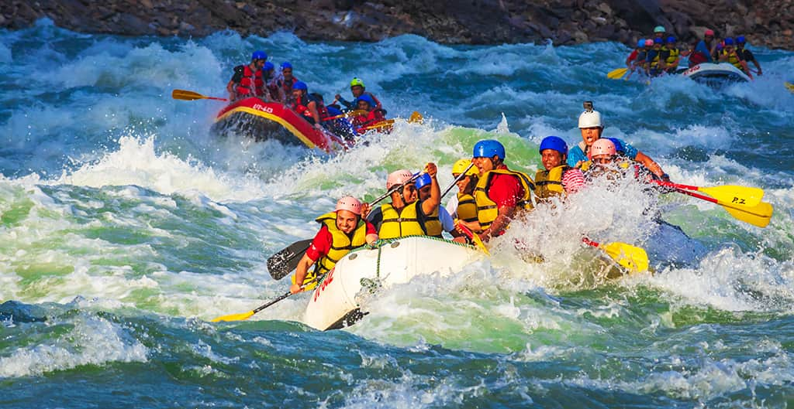
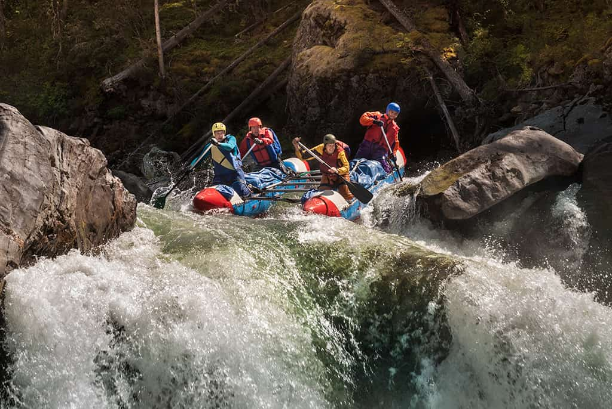
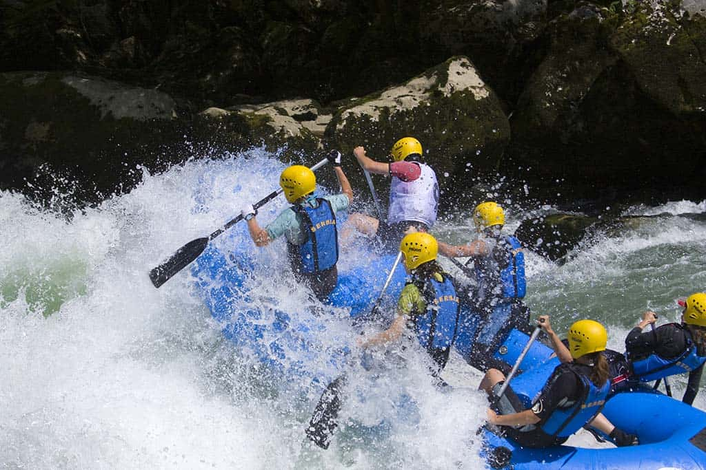

Venha viver a energia das corredeiras com guias experientes e um atendimento acolhedor!

Venha viver a energia das corredeiras com guias experientes e um atendimento acolhedor!
A Aventura Rafting começou com um pequeno grupo de apaixonados por rios e esportes ao ar livre. Com o tempo, reunimos guias qualificados, aprimoramos nossos equipamentos e construímos uma reputação baseada em segurança e diversão.

Hoje, recebemos famílias, iniciantes e aventureiros experientes para explorar as melhores rotas de corredeiras da região, sempre garantindo momentos inesquecíveis em meio à natureza.




